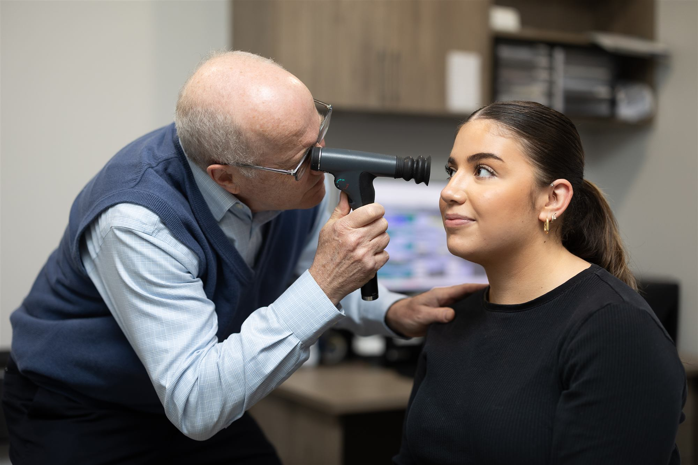

Care for the whole family, in one place.
Start with your GP for anything at all. From check-ups and skin checks to pregnancy care and ongoing conditions, we'll look after it here, with nurses, pharmacy and pathology in the same building.
Care from your GP
Choose a service to see what your visit looks like, step by step.
Everyday GP care
Check-ups, scripts, referrals, results and ongoing care.
Skin checks
Full-body checks and spot checks for moles and lesions.
Health assessments
Structured check-ups for eligible age groups.
Ongoing conditions
Care plans and regular reviews with your GP and nurse.
Mental health
A private conversation, a care plan and referrals.
Women's health
Cervical screening, contraception and menopause care.
Men's health
Heart, prostate and mental health, handled sensitively.
Pregnancy & new babies
Shared antenatal care and postnatal checks with your own GP.
Babies & children
Immunisations, growth checks and family care.
Immunisations & travel
Routine, flu and travel vaccinations.
Work health & WorkCover
Pre-employment medicals and workplace injuries.
Telehealth
Phone and video consults with your own doctor.
Under the same roof
The extras that make your visit easier, all in the same building.
Nursing support
Registered nurses always on site.
Allied health & specialists
Physio, dietetics, podiatry, speech pathology, psychology and a visiting obstetrician and gynaecologist.
Minor procedures
Done by our GPs in our own treatment rooms.
After hours
Weekend consulting and home visits through 13SICK.
Pharmacy
Priceline Pharmacy Balwyn, in the building.
Pathology
Dorevitch collection, walk in on weekday mornings.

Everyday GP care
Our GPs and registrars look after patients of every age, from routine check-ups and vaccinations to complex and ongoing conditions. With registered nurses always on site, many procedures and health checks can be done on the day.
Whether it's a health check, a script, a referral or something more involved, we keep your whole health picture in one place.
Skin cancer checks
A careful look at your skin, with follow-up in the same practice if anything needs it.
Skin cancer is common in Australia, so it's worth checking in with your GP about your skin. Our doctors do full-body skin examinations and spot checks, using dermoscopy to look closely at moles and lesions.
If something needs attention, a biopsy or excision can often be arranged on site, so you're looked after from the check through to treatment.
Bulk billing is not available for skin checks. You'll find the fees, and the doctors who do skin checks, in Find care.
Every service, step by step
What happens at your appointment, who you'll see and how long to allow. The same information is in our Find care search.

Registered nurses, always on site
Our nurses work alongside your GP, so more of your visit happens in one place.
- ProceduresPreparation, dressings and aftercare
- Health assessmentsMeasurements, history and screening
- ImmunisationsChildhood, adult and travel
- Wound careDressings and reviews
- Care coordinationCare plans and allied health referrals
More care, close by
The people and support in the same building as your GP.
Allied health in our rooms
Independent allied health providers consult from our rooms.
- PhysiotherapyBeau Calderon
- DieteticsHumphrey Wong, 211 Nutrition
- PodiatryYunus Abou-eid
- Speech pathologyQueenie Hung
- Clinical psychologyLanki Pangnadasa, visiting on referral from our GPs
Ask reception or your GP about appointments and rebates.
Obstetrics and gynaecology
Dr Samina Kausar (FRANZCOG, FRCOG, FCPS) is a consultant obstetrician and gynaecologist who consults at Balwyn. She helps with periods and general gynaecology, menopause, contraception, abnormal cervical screening results and colposcopy, and pelvic floor concerns.
Dr Kausar performs Mirena (IUD) insertion as a day procedure here at the clinic, so there's no need to go to hospital. She speaks English, Urdu, Punjabi and Hindi.
You'll need a referral from your GP. Ask your doctor at your next visit, or call reception and we'll arrange it.
Minor procedures
Sutures, dressings, incision and drainage, fracture plastering, cryotherapy and minor surgery, done by our GPs in our own treatment rooms.
Fees, doctors and what to expectPharmacy and pathology in the building
Priceline Pharmacy Balwyn
At 427 Whitehorse Rd, in the same building as the practice, so you can fill your script before you head home.
Dorevitch pathology collection
Walk in, with no appointment needed, Monday to Friday from 8:30am to 12pm. Dorevitch's own collectors take your samples, and your results come back to your GP for review and follow-up.
Prefer to be seen from home?
Many of these services can start with a phone or video consult with your doctor, for scripts, referrals, results and follow-ups.